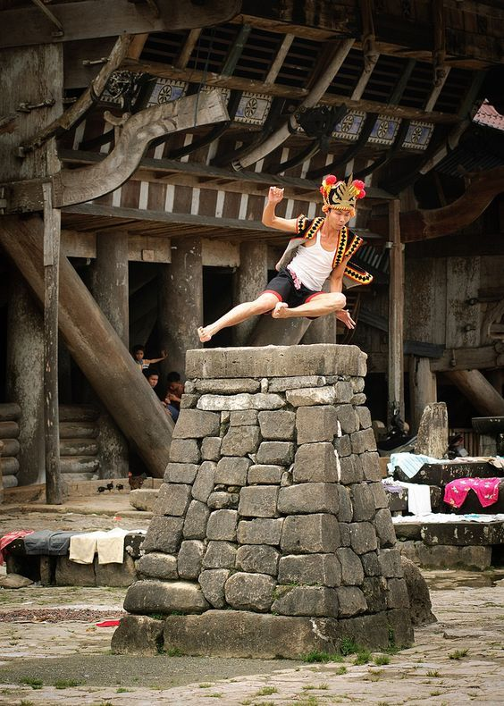
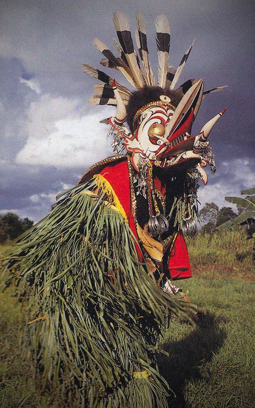
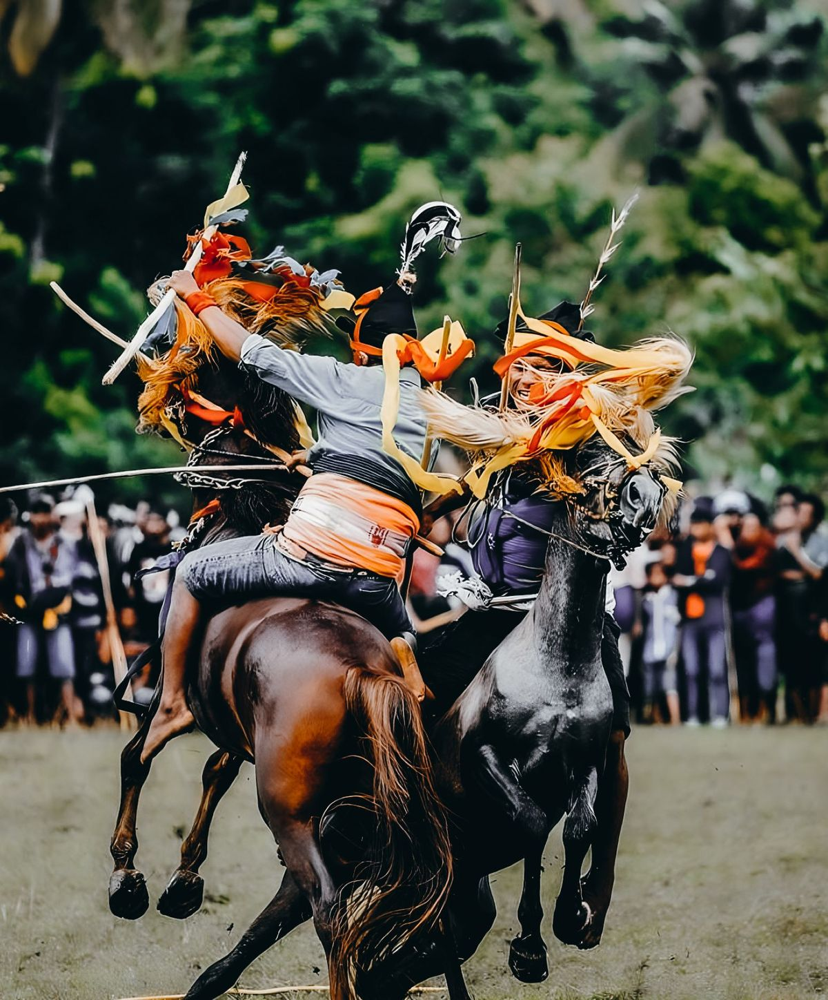

Pesona Tradisi yang Terlupakan
Menjelajahi keunikan adat istiadat dari pelosok negeri yang jarang tersorot kamera.

Fahombo, Nias
Tradisi melompati batu setinggi 2 meter sebagai tanda pendewasaan pria di Sumatera Utara.

Tari Hudoq, Kaltim
Ritual tarian mengenakan topeng kayu raksasa untuk memohon kesuburan hasil panen suku Dayak.

Karapan Sapi, Madura
Ajang balap sapi bergengsi yang menunjukkan martabat dan kekuatan peternak di Jawa Timur.

Pasola, Sumba
Permainan ketangkasan melempar lembing kayu di atas kuda yang dipacu kencang di NTT.